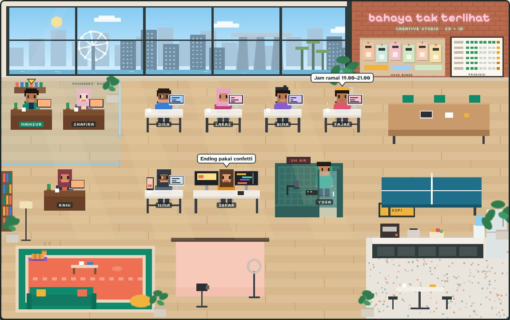

Video
Semua episode Si Halus, dari bahaya di tempat kerja sampai di dapur sendiri. Yang bertanda putar bisa ditonton langsung di sini.
Segera tayang
Naskah dan cover sudah jadi, videonya sedang diproduksi.
- segera tayangEP16Salad yang licik
- segera tayangEP17Siap lari, siap CPR
- segera tayangEP18Pindah ngecas ke meja
Musim 3: Bahaya di rumah
Dapur, kamar mandi, colokan, dan botol yang menyamar.
- EP13Cium bau gas? Tenang, lakuin ini
- EP14Botol air mineral isi cairan berbahaya
- EP15Air panas di dapur
- EP10Tersetrum colokan
- EP11Beban ibu rumah tangga
- EP12Lantai kamar mandi licin
Musim 2: Bahaya di kepala
Stres, burnout, dan kebiasaan layar yang diam-diam melelahkan.
- EP07Psikosomatik: stres yang bicara lewat badan
- EP08Notifikasi malam dan burnout
- EP09Doomscrolling
Musim 1: Bahaya di tempat kerja (IHOH)
Udara, getaran, bising, panas, dan debu di lingkungan kerja.
- EP01CO₂ di ruang rapat
- EP02Getaran alat kerja
- EP03Kebisingan
- EP04Tekanan panas
- EP05Debu silika
- EP06Karbon monoksida

Di balik layar
Mampir ke kantor kami
Setiap episode lahir dari kantor virtual ini: Dika mengecek fakta, Laras menulis naskah, Bima menggambar Si Halus, Sekar menganimasikan, Yoga merekam suara, Nina memeriksa, Fajar menyiapkan caption. Klik orangnya untuk melihat apa yang sedang ia kerjakan. Jangan bangunkan Kopi, kucing kantor yang sedang tidur di karpet.
Kantor dibuka di tab baru.